4. JSF を用いた画面表示¶
JSF(Java Server Faces) を用いた画面表示と画面遷移について学習します。
4.1. 画面ファイルの作成¶
画面部分の作成を行います。
4.1.1. index.xhtml, endState.xhtml の作成¶
プロジェクトを右クリックし「新規(N)」->「XHTML ページ」を選択します。
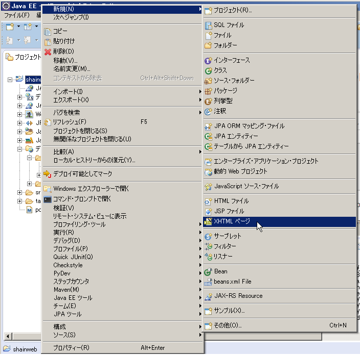「New XHTML Page」ダイアログで以下の値を指定し、「次へ(N)>」ボタンを押下します。
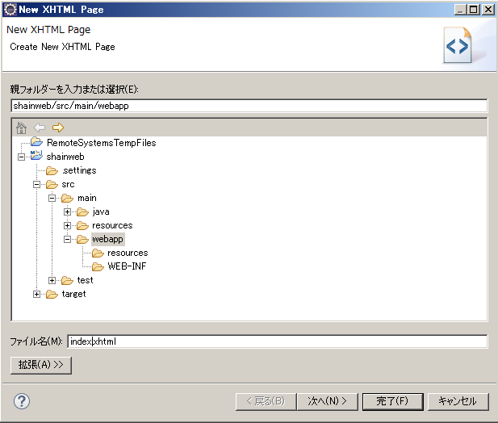項目 設定値 親フォルダー(E) shainweb/src/main/webapp ファイル名(M) index.xhtml 「Select XHTML Template」画面で以下の値を指定し、「完了(F)>」ボタンを押下します。
項目 設定値 Use XHTML Template チェック テンプレート(T) Blank JSF Page 
「プロジェクト・エクスプローラー」の「デプロイ済みリソース」webapp 配下に index.xhtml が作成されます。
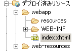同様に、endState.xhtml を作成してください。
{kind=link}
{kind=link}
4.1.2. index.xhtml、endState.xhtml の編集¶
index.xhtml を HTML エディターで開き、内容を以下のように編集します。
<!DOCTYPE html PUBLIC "-//W3C//DTD XHTML 1.0 Transitional//EN" "http://www.w3.org/TR/xhtml1/DTD/xhtml1-transitional.dtd">
<html xmlns="http://www.w3.org/1999/xhtml"
xmlns:ui="http://java.sun.com/jsf/facelets"
xmlns:f="http://java.sun.com/jsf/core"
xmlns:h="http://java.sun.com/jsf/html">
<h:head>ShainWeb</h:head>
<h:body>
<h:form>
<h:commandButton action="#{shainList.serveResponse}" value="Invoke Action" />
</h:form>
</h:body>
</html>
次に endState.xhtml を HTML エディターで開き、内容を以下のように編集します。
<!DOCTYPE html PUBLIC "-//W3C//DTD XHTML 1.0 Transitional//EN" "http://www.w3.org/TR/xhtml1/DTD/xhtml1-transitional.dtd">
<html xmlns="http://www.w3.org/1999/xhtml"
xmlns:ui="http://java.sun.com/jsf/facelets"
xmlns:f="http://java.sun.com/jsf/core"
xmlns:h="http://java.sun.com/jsf/html">
<h:head>ShainWeb - End State</h:head>
<h:body>
<p>This is the <strong>end state</strong>.</p>
<h:form>
<h:link outcome="index.xhtml">戻る</h:link>
</h:form>
</h:body>
</html>
index.xhtml において #{} で囲まれた部分を EL 式 (Expression Language) と呼びます。
4.1.3. Java クラスの作成¶
com.javadera.shainweb.controller パッケージに ShainList クラスを新規作成してください。 このクラスは、画面での操作を受け取って処理を行うクラスになります (Backing Bean と呼ばれます)。 ShainList クラスを開き、内容を以下のように編集して保存します。
package com.javadera.shainweb.controller;
import javax.enterprise.context.RequestScoped;
import javax.inject.Named;
@Named
@RequestScoped
public class ShainList {
public String serveResponse() {
return "endState.xhtml";
}
}
クラスに Named アノテーションと RequestScoped アノテーションが付いています。 Named アノテーションが付いたクラスは DI コンテナで管理され、クラス名を用いて他のクラスや EL 式から参照できるようになります。
さきほど作成した index.xhtml 内で #{shainList.serveResponse} は、ShainList クラスの serveResponse メソッドを参照しています。
RequestScoped アノテーションは、このクラスがリクエストを受け付けてからレスポンスを返すまでの間に生存することができるスコープです。 レスポンスを返した後は、GC により破棄されます。
注釈
RequestScoped の他にもさまざまなスコープがあります。
- ApplicationScoped
- SessionScoped
- ViewScoped
- ConversationScoped
- FlowScoped
4.1.4. web.xml の作成¶
最後に web.xml を作成します。このファイルは、作成する Web アプリケーション全体の設定値を保持するファイルです。
プロジェクトを右クリックし「新規(N)」->「その他」を選択します。
「新規」ウィンドウで「XML」の「XML ファイル」を選択し、「次へ(N)>」ボタンを押下します。
「ウィザードを選択」ダイアログで「XML」配下の「XML ファイル」を選択し、「次へ(N)>」ボタンを押下します。
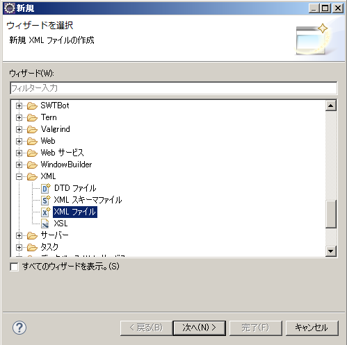「XML」画面で以下の値を指定し、「次へ(N)>」ボタンを押下します。
項目 設定値 親フォルダー(E) shainweb/src/main/webapp/WEB-INF ファイル名(M) web.xml 
「次から XML ファイルを作成」画面で「XML テンプレートから XML ファイルを作成(T)」を指定し、「次へ(N)>」ボタンを押下します。
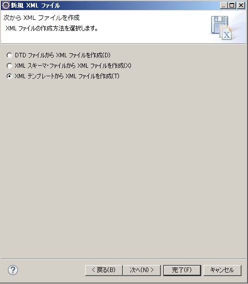「XML テンプレートの選択」画面で何も変更せず、「完了(F)」ボタンを押下します。
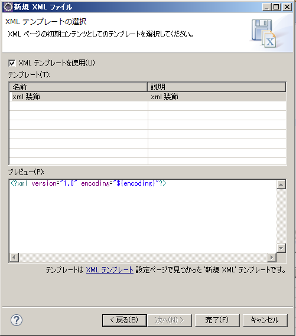作成された XML ファイルを以下のように編集して保存します。
{kind=link}
{kind=link}
{kind=link}
<?xml version="1.0" encoding="UTF-8"?>
<web-app xmlns="http://xmlns.jcp.org/xml/ns/javaee"
xmlns:xsi="http://www.w3.org/2001/XMLSchema-instance"
xsi:schemaLocation="http://xmlns.jcp.org/xml/ns/javaee
http://xmlns.jcp.org/xml/ns/javaee/web-app_3_1.xsd"
version="3.1" metadata-complete="false">
<display-name>
shainweb
</display-name>
<servlet>
<servlet-name>Faces Servlet</servlet-name>
<servlet-class>
javax.faces.webapp.FacesServlet
</servlet-class>
<load-on-startup>1</load-on-startup>
</servlet>
<servlet-mapping>
<servlet-name>Faces Servlet</servlet-name>
<url-pattern>*.xhtml</url-pattern>
</servlet-mapping>
<context-param>
<param-name>javax.faces.PROJECT_STAGE</param-name>
<param-value>Development</param-value>
</context-param>
<welcome-file-list>
<welcome-file>index.xhtml</welcome-file>
</welcome-file-list>
</web-app>
4.2. プロジェクトのデバッグ¶
今まで作成した画面をデバッグ実行します。
4.2.1. Eclipse が使用するブラウザの設定¶
デバッグ時に、通常使用している Web ブラウザを使用したい場合は、以下の手順で設定してください。
メニューバーの「ウィンドウ」から「設定」を選択します。
「設定」ダイアログの左ペイン「一般」配下の「Web ブラウザー」を選択します。
右ペインで「外部 Web ブラウザーを使用(X)」を選択します。
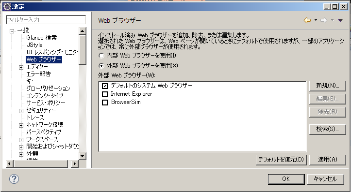「外部 Web ブラウザー」で好みのブラウザを指定します。
{kind=link}
4.2.2. デバッグ実行¶
デバッグして動作を確認します。
プロジェクトを右クリックし「デバッグ(D)」->「サーバーでデバッグ(1)」を選択します。
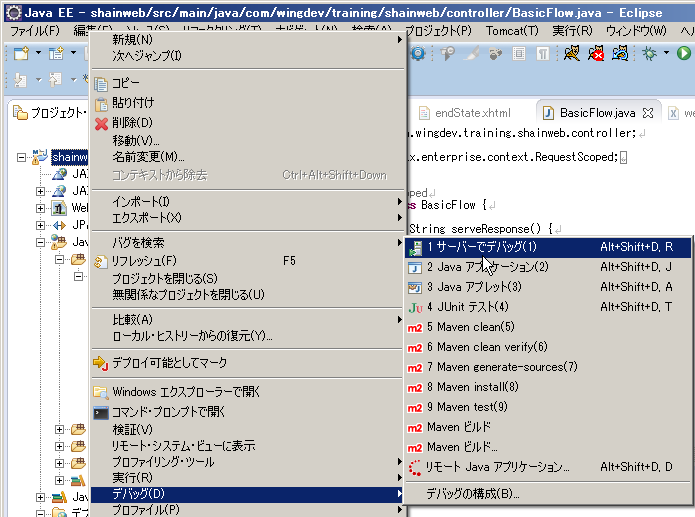コンソール画面上で、WildFly が起動していることが確認できます。
ブラウザに以下のような画面が表示されます。
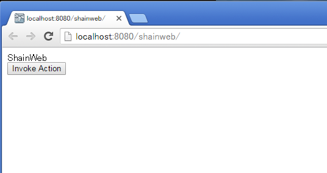ShainList クラスの serveResponse メソッドで return 文にブレイクポイントを設定します。
「Invoke Action」ボタンを押下します。
設定したブレイクポイントで停止し、デバッグ可能であることが分かります。
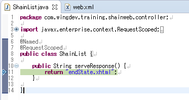Eclipse 上で F8 を押下すると endState.xhtml が表示されます。
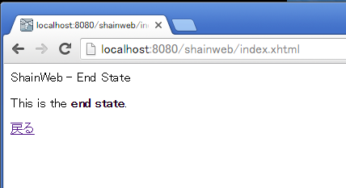画面上で「戻る」リンクをクリックすると最初の画面に戻ります。
{kind=link}
{kind=link}
{kind=link}
{kind=link}
4.3. PrimeFaces を使った画面表示¶
JSF のライブラリである PrimeFaces を用いて、リッチな Web アプリケーションを作成する準備をします。
プロジェクト直下の「pom.xml」を開きます。
- <dependencies> タグを探し、その配下に以下を追記して保存します。以下では arquillian-protocol-servlet の下に追記したところです。
<dependency> <groupId>org.jboss.arquillian.protocol</groupId> <artifactId>arquillian-protocol-servlet</artifactId> <scope>test</scope> </dependency> <dependency> <groupId>org.primefaces</groupId> <artifactId>primefaces</artifactId> <version>5.3</version> </dependency>
Maven がライブラリをダウンロードしてプロジェクトに組み込みます。
4.3.1. index.html 画面の修正¶
PrimeFaces のボタンを使用してみます。index.xhtml を以下のように書き換えてください。
<!DOCTYPE html PUBLIC "-//W3C//DTD XHTML 1.0 Transitional//EN" "http://www.w3.org/TR/xhtml1/DTD/xhtml1-transitional.dtd">
<html xmlns="http://www.w3.org/1999/xhtml"
xmlns:ui="http://java.sun.com/jsf/facelets"
xmlns:f="http://java.sun.com/jsf/core"
xmlns:h="http://java.sun.com/jsf/html"
xmlns:p="http://primefaces.org/ui">
<h:head>ShainWeb</h:head>
<h:body>
<h:form>
<table>
<tr>
<td>JSF</td>
<td><h:commandButton action="#{shainList.serveResponse}" value="Invoke Action" /></td>
</tr>
<tr>
<td>PrimeFaces</td>
<td><p:commandButton action="#{shainList.serveResponse}" value="Invoke Action" /></td>
</tr>
</table>
</h:form>
</h:body>
</html>
デバッグ実行すると、以下のようになります。
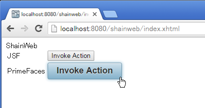{kind=link}
ボタン上にマウスを移動したときにボタンの色が変わることが分かります。 以降の開発では PrimeFaces のコンポーネントを用いて進めます。
4.3.2. 画面表示の修正¶
上の図で PrimeFaces のボタン上に表示されるフォントが大きいことが分かります。これを CSS を設定することで小さくします。
4.3.2.1. CSS ファイルの作成¶
shainweb プロジェクトの「デプロイ済みリソース」配下の「webapp」「resources」を右クリックし「新規(N)」「フォルダー」を選択します。
「フォルダー」画面で以下の値を指定し、「完了(F)」ボタンを押下します。
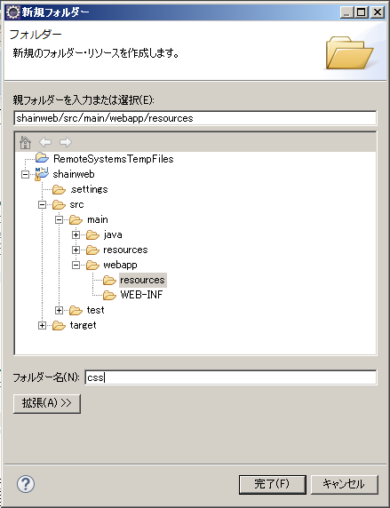項目 設定値 親フォルダー(E) shainweb/src/main/webapp/resources フォルダー名(N) css 作成した css フォルダーを右クリックし、「新規(N)>」「その他(O)」を選択します。
「Web」配下の「CSS ファイル」を選択し、「次へ(N)>」ボタンを押下します。
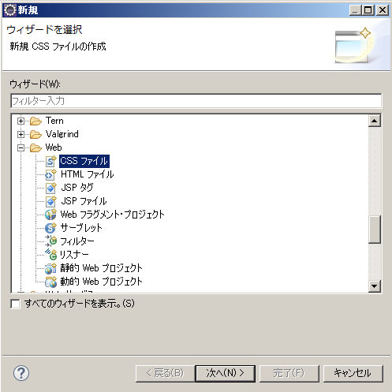「CSS」画面で以下の値を指定し、「完了(F)」ボタンを押下します。
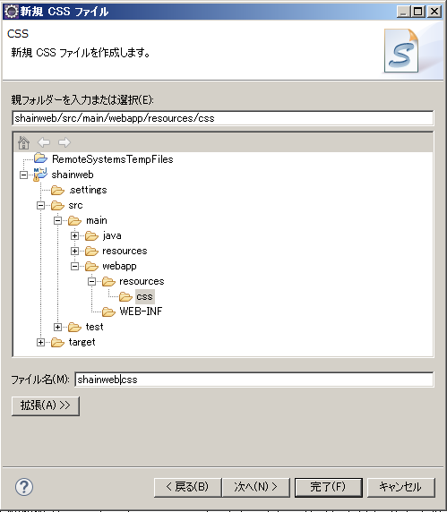項目 設定値 親フォルダー(E) shainweb/src/main/webapp/resources/css ファイル名(M) shainweb.css
{kind=link}
{kind=link}
{kind=link}
作成された shainweb.css を以下のように編集してください。
.ui-widget, .ui-widget .ui-widget {
font-size: 80%;
}
4.3.2.2. index.xhtml ファイルの編集¶
作成した CSS ファイルを index.xhtml に取り込みます。index.xhtml を以下のように編集してください。
<h:head> の部分が変わります。
<!DOCTYPE html PUBLIC "-//W3C//DTD XHTML 1.0 Transitional//EN" "http://www.w3.org/TR/xhtml1/DTD/xhtml1-transitional.dtd">
<html xmlns="http://www.w3.org/1999/xhtml"
xmlns:ui="http://java.sun.com/jsf/facelets"
xmlns:f="http://java.sun.com/jsf/core"
xmlns:h="http://java.sun.com/jsf/html"
xmlns:p="http://primefaces.org/ui">
<h:head>
<title>ShainWeb</title>
<h:outputStylesheet library="css" name="shainweb.css" />
</h:head>
<h:body>
<h:form>
<table>
<tr>
<td>JSF</td>
<td><h:commandButton action="#{shainList.serveResponse}" value="Invoke Action" /></td>
</tr>
<tr>
<td>PrimeFaces</td>
<td><p:commandButton action="#{shainList.serveResponse}" value="Invoke Action" /></td>
</tr>
</table>
</h:form>
</h:body>
</html>
画面をリロードすると、フォントが小さくなっていることが確認できます。
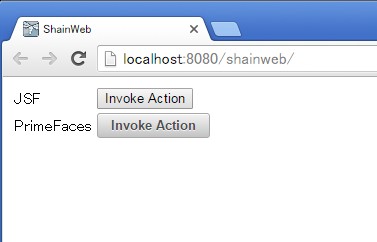{kind=link}
4.4. データの一覧表示¶
データ一覧を PrimeFaces コンポーネントを使って一覧表示します。
テーブルの作成 で作成したテーブルのデータを保持する Java クラスを用いてレコードを Backing Bean 内で生成し index.xhtml に表示します。
4.4.1. エンティティクラスの生成¶
テーブルの作成 で作成したテーブルのデータを保持する「エンティティクラス」を自動生成します。
プロジェクトを右クリックし「JPA ツール」->「テーブルからエンティティーを生成...」を選択します。
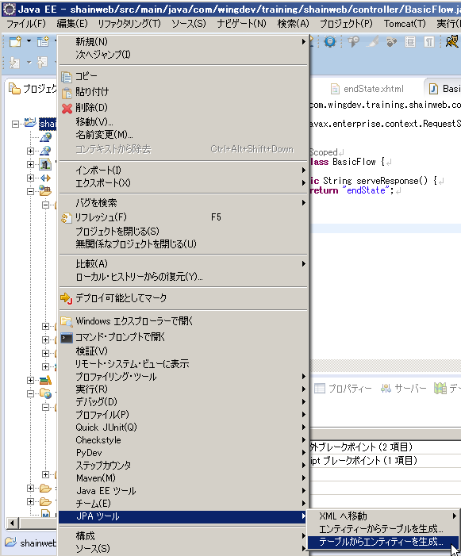「エンティティーの生成」ダイアログで以下の値を指定し、「完了(F)」ボタンを押下します。
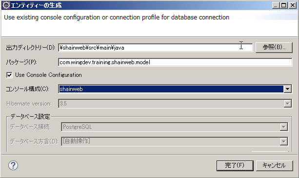項目 設定値 出力ディレクトリー(D) \shainweb\src\main\java パッケージ(P) com.javadera.shainweb.model コンソール構成(C) shainweb com.javadera.shainweb.model パッケージ配下に Employee_.java と Employee.java および RoleMaster.java と RoleMaster_.java の 4 つのファイルが生成されていることを確認します。
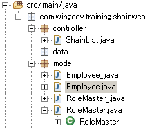
{kind=link}
{kind=link}
アンダーバーの付いていないクラス Employee.java と RoleMaster.java の中身を確認してください。 @Id や @Column などのアノテーションが付いていることが分かります。
4.4.2. ShainList クラスの修正¶
Backing Bean である ShainList クラスを修正します。主な修正点は以下の通りです。
- 社員一覧データを保持する private 変数と getter、setter メソッドの追加
- @PostConstruct アノテーションが付いた初期化処理用メソッド init の追加
- Backing Bean 内で Employee データを生成する createEmp メソッドの追加
ShainList クラスを以下のように修正してください。
package com.javadera.shainweb.controller;
import java.util.ArrayList;
import java.util.Date;
import java.util.List;
import javax.annotation.PostConstruct;
import javax.enterprise.context.RequestScoped;
import javax.inject.Named;
import com.javadera.shainweb.model.Employee;
@Named
@RequestScoped
public class ShainList {
private List<Employee> empList = new ArrayList<>();
@PostConstruct
public void init() {
for(int i = 0; i < 10; i++) {
Employee emp = createEmp(i);
empList.add(emp);
}
}
/**
* endState ページに遷移します。
* @return
*/
public String serveResponse() {
return "endState";
}
/**
* 指定した数値で従業員テストデータを作成します。
* @param i
* @return
*/
private Employee createEmp(int i) {
Employee emp = new Employee();
emp.setShainId(i);
emp.setFamilyName("姓 " + i);
emp.setFamilyNameKana("セイ " + i);
emp.setGivenName("名 " + i);
emp.setGivenNameKana("メイ " + i);
emp.setEmail("sei" + i + "@shainweb.com");
emp.setPhoneNumber("0123" + i);
emp.setCellphoneNumber("3210" + i);
emp.setAddress("住所 " + i);
emp.setJoinDate(new Date());
return emp;
}
//--- getter, setter ---
public List<Employee> getEmpList() {
return empList;
}
public void setEmpList(List<Employee> empList) {
this.empList = empList;
}
}
PostConstruct アノテーションが付いたメソッドは、アプリケーションサーバ内で本クラスの作成終了後に呼ばれるようになります。 そのタイミングで createEmp メソッドを用いてテストデータ (10 名分) を作成し一覧に追加しています。
4.4.3. index.xhtml の修正¶
PrimeFaces コンポーネントの dataTable を使って一覧表示部分を追記します。以下のように修正してください。
<!DOCTYPE html PUBLIC "-//W3C//DTD XHTML 1.0 Transitional//EN" "http://www.w3.org/TR/xhtml1/DTD/xhtml1-transitional.dtd">
<html xmlns="http://www.w3.org/1999/xhtml"
xmlns:ui="http://java.sun.com/jsf/facelets"
xmlns:f="http://java.sun.com/jsf/core"
xmlns:h="http://java.sun.com/jsf/html"
xmlns:p="http://primefaces.org/ui">
<h:head>
<title>ShainWeb</title>
<h:outputStylesheet library="css" name="shainweb.css" />
</h:head>
<h:body>
<h:form>
<table>
<tr>
<td>JSF</td>
<td><h:commandButton action="#{shainList.serveResponse}" value="Invoke Action" /></td>
</tr>
<tr>
<td>PrimeFaces</td>
<td><p:commandButton action="#{shainList.serveResponse}" value="Invoke Action" /></td>
</tr>
</table>
<p:dataTable var="e" value="#{shainList.empList}">
<p:column headerText="Id">
<h:outputText value="#{e.shainId}"/>
</p:column>
<p:column headerText="氏名">
<h:outputText value="#{e.familyName} #{e.givenName}"/>
</p:column>
<p:column headerText="氏名(カナ)">
<h:outputText value="#{e.familyNameKana} #{e.givenNameKana}"/>
</p:column>
<p:column headerText="メールアドレス">
<h:outputText value="#{e.email}"/>
</p:column>
<p:column headerText="電話番号(携帯)">
<h:outputText value="#{e.phoneNumber} (#{e.cellphoneNumber})"/>
</p:column>
<p:column headerText="住所">
<h:outputText value="#{e.address}"/>
</p:column>
<p:column headerText="入社日">
<h:outputText value="#{e.joinDate}"/>
</p:column>
<p:column headerText="退社日">
<h:outputText value="#{e.quitDate}"/>
</p:column>
</p:dataTable>
</h:form>
</h:body>
</html>
プロジェクトをデバッグ実行してください。以下のような画面が表示されます。
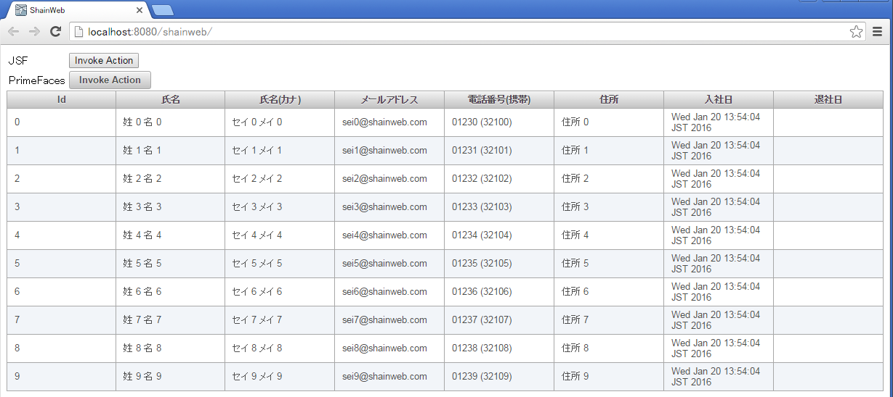{kind=link}
退社日は設定していないので空欄になります。
4.4.4. pom.xml の修正¶
プロジェクトのフォルダ直下にある pom.xml を開きます。<build> タグ配下の <plugins> 配下に以下を追記してください。
<plugin>
<groupId>org.apache.maven.plugins</groupId>
<artifactId>maven-compiler-plugin</artifactId>
<version>3.5.1</version>
<configuration>
<source>${maven.compiler.source}</source>
<target>${maven.compiler.target}</target>
<compilerArgument>-proc:none</compilerArgument>
</configuration>
</plugin>
追記したら保存して閉じてください。
4.5. Template による画面の分割表示¶
テンプレートを使って、画面を分割します。これにより以下の図に示すように見やすい画面を構築できます。
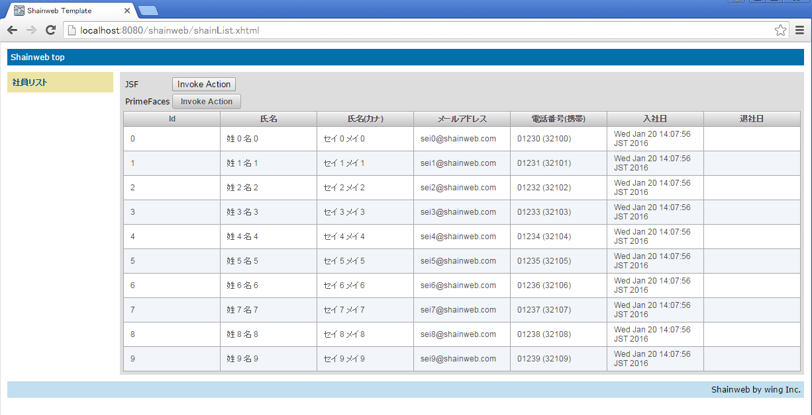{kind=link}
4.5.1. 社員一覧画面 (shainList.xhtml) の作成¶
index.xhtml, endState.xhtml ファイルと同じ場所に shainList.xhtml を新規作成してください。
shainList.xhtml の内容を以下のように修正してください。
<ui:composition xmlns="http://www.w3.org/1999/xhtml" xmlns:ui="http://java.sun.com/jsf/facelets" xmlns:f="http://java.sun.com/jsf/core" xmlns:h="http://java.sun.com/jsf/html" xmlns:p="http://primefaces.org/ui" template="/WEB-INF/template.xhtml"> <ui:define name="content"> <table> <tr> <td>JSF</td> <td><h:commandButton action="#{shainList.serveResponse}" value="Invoke Action" /></td> </tr> <tr> <td>PrimeFaces</td> <td><p:commandButton action="#{shainList.serveResponse}" value="Invoke Action" /></td> </tr> </table> <p:dataTable var="e" value="#{shainList.empList}"> <p:column headerText="Id"> <h:outputText value="#{e.shainId}"/> </p:column> <p:column headerText="氏名"> <h:outputText value="#{e.familyName} #{e.givenName}"/> </p:column> <p:column headerText="氏名(カナ)"> <h:outputText value="#{e.familyNameKana} #{e.givenNameKana}"/> </p:column> <p:column headerText="メールアドレス"> <h:outputText value="#{e.email}"/> </p:column> <p:column headerText="電話番号(携帯)"> <h:outputText value="#{e.phoneNumber} (#{e.cellphoneNumber})"/> </p:column> <p:column headerText="入社日"> <h:outputText value="#{e.joinDate}"/> </p:column> <p:column headerText="退社日"> <h:outputText value="#{e.quitDate}"/> </p:column> </p:dataTable> </ui:define> </ui:composition>index.xhtml を 削除 してください。
endState.xhtml の内容を以下のように修正してください。
<ui:composition xmlns="http://www.w3.org/1999/xhtml" xmlns:ui="http://java.sun.com/jsf/facelets" xmlns:f="http://java.sun.com/jsf/core" xmlns:h="http://java.sun.com/jsf/html" xmlns:p="http://primefaces.org/ui" template="/WEB-INF/template.xhtml"> <ui:define name="content"> <h:link outcome="shainList.xhtml">戻る</h:link> </ui:define> </ui:composition>
4.5.2. テンプレートの作成¶
WEB-INF フォルダ内に以下の 4 つの XHTML を新規作成してください。
- template.xhtml
- top.xhtml
- left.xhtml
- bottom.xhtml
それぞれの内容を以下のように修正してください。
template.xhtml
<!DOCTYPE html>
<html xmlns="http://www.w3.org/1999/xhtml"
xmlns:ui="http://java.sun.com/jsf/facelets"
xmlns:f="http://java.sun.com/jsf/core"
xmlns:h="http://java.sun.com/jsf/html"
xmlns:p="http://primefaces.org/ui">
<h:head>
<meta http-equiv="Content-Type" content="text/html; charset=UTF-8" />
<h:outputStylesheet library="css" name="shainweb.css" />
<h:outputStylesheet library="css" name="default.css" />
<h:outputStylesheet library="css" name="cssLayout.css" />
<title>Shainweb Template</title>
</h:head>
<h:body>
<h:form>
<div id="top">
<ui:insert name="top"><ui:include src="top.xhtml" /></ui:insert>
</div>
<div>
<div id="left">
<ui:insert name="left"><ui:include src="left.xhtml" /></ui:insert>
</div>
<div id="content" class="left_content">
<ui:insert name="content">Content</ui:insert>
</div>
</div>
<div id="bottom">
<ui:insert name="bottom"><ui:include src="bottom.xhtml" /></ui:insert>
</div>
</h:form>
</h:body>
</html>
top.xhtml
<!DOCTYPE html>
<html xmlns="http://www.w3.org/1999/xhtml"
xmlns:ui="http://java.sun.com/jsf/facelets"
xmlns:f="http://java.sun.com/jsf/core"
xmlns:h="http://java.sun.com/jsf/html"
xmlns:p="http://primefaces.org/ui">
<h:head>
<meta http-equiv="Content-Type" content="text/html; charset=UTF-8" />
</h:head>
<h:body>
<ui:composition>
Shainweb top
</ui:composition>
</h:body>
</html>
left.xhtml
<!DOCTYPE html>
<html xmlns="http://www.w3.org/1999/xhtml"
xmlns:ui="http://java.sun.com/jsf/facelets"
xmlns:f="http://java.sun.com/jsf/core"
xmlns:h="http://java.sun.com/jsf/html"
xmlns:p="http://primefaces.org/ui">
<h:head>
<meta http-equiv="Content-Type" content="text/html; charset=UTF-8" />
</h:head>
<h:body>
<ui:composition>
<table>
<tr>
<td><h:link outcome="shainList.xhtml">社員リスト</h:link></td>
</tr>
</table>
</ui:composition>
</h:body>
</html>
bottom.xhtml
<!DOCTYPE html>
<html xmlns="http://www.w3.org/1999/xhtml"
xmlns:ui="http://java.sun.com/jsf/facelets"
xmlns:f="http://java.sun.com/jsf/core"
xmlns:h="http://java.sun.com/jsf/html"
xmlns:p="http://primefaces.org/ui">
<h:head>
<meta http-equiv="Content-Type" content="text/html; charset=UTF-8" />
</h:head>
<h:body>
<ui:composition>
Shainweb by wing Inc.
</ui:composition>
</h:body>
</html>
4.5.3. スタイルシートの作成、shainweb.css の修正¶
webapp/resources/css フォルダ内に以下の 2 つの css ファイルを新規作成してください。
- cssLayout.css
- default.css
それぞれの内容を以下のように修正してください。
cssLayout.css
#top {
position: relative;
background-color: #036fab;
color: white;
padding: 5px;
margin: 0px 0px 10px 0px;
}
#bottom {
position: relative;
background-color: #c2dfef;
padding: 5px;
margin: 10px 0px 0px 0px;
text-align: right;
}
#left {
float: left;
background-color: #ece3a5;
padding: 5px;
width: 150px;
}
#right {
float: right;
background-color: #ece3a5;
padding: 5px;
width: 150px;
}
.center_content {
position: relative;
background-color: #dddddd;
padding: 5px;
}
.left_content {
background-color: #dddddd;
padding: 5px;
margin-left: 170px;
}
.right_content {
background-color: #dddddd;
padding: 5px;
margin: 0px 170px 0px 170px;
}
#top a:link, #top a:visited {
color: white;
font-weight : bold;
text-decoration: none;
}
#top a:link:hover, #top a:visited:hover {
color: black;
font-weight : bold;
text-decoration : underline;
}
default.css
body {
background-color: #ffffff;
font-size: 12px;
font-family: Verdana, "Verdana CE", Arial, "Arial CE", "Lucida Grande CE", lucida, "Helvetica CE", sans-serif;
color: #000000;
margin: 10px;
}
h1 {
font-family: Arial, "Arial CE", "Lucida Grande CE", lucida, "Helvetica CE", sans-serif;
border-bottom: 1px solid #AFAFAF;
font-size: 16px;
font-weight: bold;
margin: 0px;
padding: 0px;
color: #D20005;
}
a:link, a:visited {
color: #045491;
font-weight : bold;
text-decoration: none;
}
a:link:hover, a:visited:hover {
color: #045491;
font-weight : bold;
text-decoration : underline;
}
shainList.css
80% に設定したものを 100% に修正してください。
4.5.4. web.xml の修正¶
最後に、WEB-INF 配下にある web.xml の <welcome-file> タグ内の値を shainList.xhtml に修正してください。
デバッグ実行し、以下のような画面が出力されることを確認してください。
4.6. まとめ¶
- JSF では基本的に XHTML を使用する。
- index.xhtml で #{shainList.serveResponse} の記述で ShainList クラス (Backing Bean) の serveResponse メソッドが呼び出された。
- serveResponse メソッドの戻り値で遷移したい画面の名前 (endState.xhtml) を指定する。
- Primefaces を用いるとリッチな UI コンポーネントが手軽に使用できる。
- テンプレートを使うとより使いやすい画面が作成できる。
他に気付いたこと、気になったことがあればメモして調査してみてください。
(例)
serveResponse メソッドで戻り値に空文字列を設定したり ”.xhtml” を書き忘れたらどうなるのか？
- アドレス欄では endState.xhtml が表示されても http://localhost:8080/shainweb/index.xhtml から変わらない。http://localhost:8080/shainweb/endState.xhtml になるべきでは？
index.xhtml でボタンをクリックしてから endState.xhtml が表示されるまでに JSF ではどのようなライフサイクルの処理が行われているか？
4.7. しらべること¶
- 表示された一覧で「入社日」の表記が「Fri Dec 25 11:13:22 JST 2015」のようになっています。時分秒や曜日は不要で YYYY/MM/DD のように表記すべきです。XHTML をどのように修正すれば、YYYY/MM/DD 表記にできるのでしょうか？